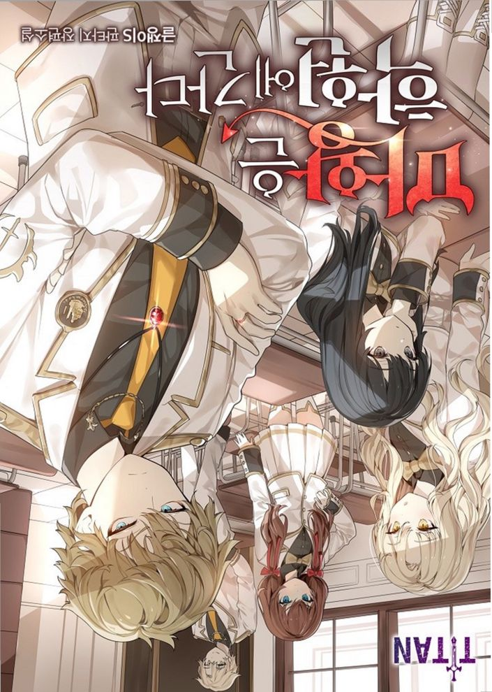

##!!## 마왕은 학원에 간다 Chapter 399화
##!!## The Demon Prince Goes to Academy Chapter 9
399화
399th episode
마신교 혐의를 받는 사람들이 있었다.
There were people suspected of being drunk.,
군중들은 분노했고, 경비대는 그들 에게 사적 제재를 가하지 말라며 성 난 군중들을 가로막고 있었다.
The crowd was furious, and the guards were standing in the way of the angry crowd, telling them not to impose private sanctions on them.,
우리가 떠나있던 세 시간 동안 무 슨 일이 있었던 건지. 그들은 전부 처형당한 상태였다.
What happened during the three hours we were gone? They were all executed.
지방 촌동네도 아니고 아무리 소국 이라 해도 한 나라의 수도，그것도 워프 게이트가 있는 대광장에서 이 런 일이 벌어진 거다.
No matter how small a country is, it is not a rural village, but the capital of a country, which is also the Great Square where the warp gate is located.
마신교도로 몰렸던 이들은 죽었고， 성난 군중들은 죽어버린 시체마저 불태워버리라고 악을 지르고 있었다.
Those who had been driven by the Masinists were dead, and angry crowds were shouting to burn down even the dead bodies.
이단심문관이 도착해서 그새 이단 의 낙인을 찍고 처형해버린 건지， 아니면 경비대가 나서서 저들을 매 달아버린 건지는 모른다.
It is not known whether the Idan Inquisitor arrived and branded and executed Ethan, or the security forces stepped up to punish them.,
하지만 지나치게 빠르게 진행된 이 처형이 제대로 된 절차로 진행되었 을 리 없다.
However, the execution, which progressed too quickly, could not have been carried out properly.
"미쳤어…. 사람들이 전부….” 끔찍한 일이 벌어질 거라 생각은 했지만 제대로 된 재판조차 없이 사 람을 죽일 정도일 줄은 몰랐기에 올 리비아는 혐오와 경멸을 넘어선 공 포를 느끼고 있는 것 같았다.
"You're crazy... ...all the people..." I something going to , but I didn't that be enough Saram a trial, so seemed feeling a contempt" I thought something terrible would happen, but I didn't know that it would kill Saram without a proper trial, so this year Libya seemed to be feeling more than disgust and contempt.
공포는 분노와 닮았다.
Fear resembles anger.
그렇기에 마왕에 대한 공포는 이웃 에 대한 분노가 되어 희생양을 찾아 다닌다.
Therefore, the fear of the devil becomes angry at the neighbor and searches for the scapegoat.
올리비아는 그 끔찍한 처형 현장과 성난 군중들을 외면한 채 수사본부 쪽을 향해 걸음을 옮겼다.
Olivia turned away from the scene of the terrible execution and the angry crowd, and walked toward the investigation headquarters.
“대체 레바이나 왕실이나 주신교단 은 뭘 하는 거야?”
is Reba or the or the doing?"
나는 아무런 말도 할 수 없었다.
I couldn't say anything.,
"설마，일부러 이러는 건가?”
way are you doing this for a reason?'
왕실과 교단은 아무것도 하지 않은 게 아니다. 오히려 이 상황을 종용 했을 가능성이 있다.
The royal family and the religious order did nothing. Rather, it is possible that the situation was urged.
저들은 마신교도들이 아니라 그냥 평범한 사람들이라고 말할 수도 있 을 것이다. 군중들은 그걸 믿을 수 도 있고，아닐 수도 있다. 하지만 희생양이 처형되지 않는다 면 성난 분노와 공포는 가라앉지 않 을 것이다. 실제로 저들이 마신교도 이건 아니건，저들이 죽어야만 이 분노는 일시적으로나마 가라앉는다.
may they are ordinary people, not Sakyamuni angry will not if the is if the scapegoat is not ,anger and bear In fact, whether they drink this or not, this anger only subsides temporarily when they die.
군중들에게 무언가가 해소되었다는 기분에 도취되도록 하기 위해 희생 양을 비정상적일 정도로 빠르게 처 형해버린 거다.
To make the crowd intoxicate with the feeling that something has been resolved, they have executed the sacrifice abnormally fast.
성난 군중들이 폭도가 되어버리면 엄청난 혼란이 발생할 것이다. 사람 들이 마신교도라 의심하는 이들을 풀어주는 건 그 자체만으로도 군중 들의 분노를 더더욱 치솟게 한다.
the angry mob a mob, there will a influence Unleasing those who suspect that they are drunk makes the crowd's anger soar.
그 상황을 제어하기 위해 죄 없는 이들을 죽여버렸다.
Killed innocent people to control the situation.
올리비아는 그런 정황을 읽어냈다.
Olivia read the circumstances.
진상에 닿건 아니건 그딴 건 중요 한 게 아니다.
It doesn't matter whether you reach the truth or not.
이미，마왕 습격 이후로 벌어지는 공포에 휩싸인 군중들의 이 무목적 성의 폭력이 을리비아가 인간을 혐 오하게 되는 결정적인 역할을 할 게 분명했다.
Already, it was clear that the fearless violence of the crowds since the raid would play a decisive role in making Bolivia hate humans.
"이걸 그대로 놔두실 건가요?”
you going to this it ?'
특별수사본부로 돌아와서 올리비아 는 수사본부장 스코트라 켈튼에게 그렇게 물었다.
Back at the special investigation headquarters, Olivia asked Scott Kelton, the head of the investigation.
담담한 표정의 중년의 기사는 올리 비아 무슨 말을 하는지 충분히 이해 하고 있는 것 같았다.
The middle-aged article with a calm look seemed to have a full understanding of what Ollie Via was saying.
"올리비아 양，본인이 무슨 말을 하고 있는지는 알고 계시겠지요.”
"Miss Olivia, you know what you're talking about."
"이게 내정간섭이 될 수 있고，이 수사본부에 그런 권한이 있는 게 아 니라는 건 알아요. 그래도…. 이런 건….”
"I know this could be interference in internal affairs, and I know it's you who have that authority in this investigation.s ... But... this is....â€
올리비아가 아무리 인간에 대해 환 멸한다 해도 사람들을 아무렇게나 죽이는 것에 동의하는 사람이 된 건 아니다.
No matter how much Olivia tries to destroy humans, she doesn't become a person who agrees to kill people at will.,
"물론 이 상황이 내버려 두면 대규 모 폭동으로 번질 수 있고，무차별 적인 이교도 사냥이 되어버릴 수 있 다는 걸 인지하고는 있습니다만. 특 별수사본부는 레바이나 왕국의 내정 에 영향을 끼치기 위해서가 아니라 마족 습격 사태에 대한 진상조사를 목적으로 이 자리에 왔습니다. 그 이외의 일을 할 수는 없지요.”
course, we that if we let this setting go, it into a root and into pagan . The Special Investigation Division is here not to influence the internal affairs of the Rebana Kingdom but to investigate the attack on the Ma tribe. You can't do anything else."
올리비아는 바보가 아니다. 켈튼이 말하는 걸 당연히 본인도 알고 있다.
is a fool Of course he knows what Kelton is saying.
하지만 눈앞에서 이교도에 대한 이 단재판이 순식간에 일어나 사람을 매달아버리는 광기의 현장을 목격했 고, 이런 추세가 당분간 계속되거나 폭동으로 번질 수 있다는 걸 아는데 아무런 조치도 안 하는 것이 답답할 수밖에 없다.
However, the single trial of paganism happened in an instant and witnessed a scene of madness hanging people, and it is frustrating to know that this trend could continue for a while or escalate into a riot.
하지만 특수본은 합목적성에 맞게 운영되어야 하고，지금 라지에른에 서 벌어지는 일은 명백하게 업무 외 의 일이다.
However, the special edition should be operated according to its purpose, and what is now happening in Lagerne is clearly out of the job.,
그렇기에 올리비아도 자신이 스코 트라 켈튼에게 무리한 이야기를 한 다는 정도는 안다.
That's why Olivia knows she's talking too much to Sco Tra Kelton.
하지만 이 상황을 그대로 내버려 둘 순 없지 않느냐고.
But we can't leave this situation as it is.
그런 생각을 할 정도로 올리비아에 겐 아직 인간애가 남아있다.
Olivia and Ken still have humanity to the point where they think so.
"물론，레바이나 정도야 특별한 권 한 없이도 이 상황에 대해서 몇 마 디 우려의 말을 전해준다면 유의미 한 영향을 줄 수 있습니다.”
course it can have a significant impact if you tell me a few words of concern the situation without a single note."
샤나펠의 3번대 대장. 이미 그 자 체로도 지방 소국의 왕 따윈 아무래 도 좋은 지위다. 심지어 지금은 제 국에게서 명령을 받고 현장 지휘 업 무를 맡고 있다. 내정간섭이긴 하지 만 까짓 못할 건 없다는 태도였다.
Captain of Shannappel's Third Battle. already a as of the is in a position as king of the He is even now in charge of field command and task after receiving orders from the Imperial Bureau. He said, "It is interference in domestic affairs, but there is nothing we can't do."
"하지만 제가 그런 행위 자체를 하 는 것 자체가 이미 주권을 가진 주 권국가에 대한 내정간섭이 될 수 있 습니다. 그렇기에 중요한 건 레바이 나가 아니겠지요.”
"But doing such an act itself could be interference in internal affairs for a state that already has sovereignty. That's why it's not Levi Naga."
"다른 제후국들을…. 말씀하시는 건가요?”
"Other empires...... you Are you talking about it?"
“예.”
'Yes.'
레바이나 정도에는 내정간섭을 할 수 있다. 하지만 제후국의 내정에 간섭했다는 사실을 다른 제후국들이 알면 매우 불편해할 수 있다. 아무 리 소국의 주권이라고 한들 제후국 의 주권을 침해한 거니까.
Lebana Jung-do can interfer in domestical empires. can to that in the internal of the However, it can be very inconvenient for other empires to know that they interfered in the internal affairs of their empires. Even if it's the sovereignty of any small country, it's a violation of the sovereignty of the Empire.
인류의 모든 나라들이 제국의 소속 이지만，결국 제국은 수많은 국가의 연합체다. 황도를 비롯해 제국이 자 치하는 곳도 있지만 제후국들은 자 신들만의 법과 주권을 가진다.
Empire is an of many nations, in the end, but the is a nation of nations, but the empires have and There are some places that the Empire appreciates, including the Yellow Sea, but the empires have their own laws and sovereignty.,
심지어 이 경우엔 사건 수사를 위 해 온 제국의 수사관들이 내정에 간 섭하는，목적과 불일치한 행동을 하 는 거다.
Even in this case, the Empire's investigators, who have been trying to investigate the case, are acting out of line with their purpose.
시비 털릴 조건이 너무 많으니 아 무리 상황이 개막장이어도 나설 수 는 없다는 게 스코트라 켈튼의 입장 이었고，거기에 대해선 올리비아도 나도 이해할 수밖에 없었다.
Scott Kelton's position was that there were so many conditions to be dealt with, and Olivia and I had no choice but to understand that.,
"또한，저로서도 이 대처가 그리 나쁘다 생각되진 않는군요. 성난 군 중에게 진실을 들이밀면 더욱 화를 낼 뿐입니다. 무고한 이들이 몇 죽 긴 하겠지만. 곧 잠잠해질 겁니다. ”
"Also, I don't think this response is too bad. It only makes you even angrier if you push the truth into the angry army. Innocent people may be a few years old. It'll be quiet soon. â€
스코트라 켈튼은 보고서를 읽고 어 딘가에 체크를 하는 등，펜대를 굴 리며 지나가듯 말한다.
Scott Kelton reads the report, checks at a Dean's house, and slips through the pen.
저 말이 맞다.
That's right.
희생양을 찾아다니는 이들에게 그 희생양이 무고하다는 걸 알려줘 봐 야 다른 희생양을 찾거나 더 크게 화를 낼 뿐이다. 분노란 그 분노의 원인이 잘못되었다 한들 반드시 해 소를 필요로 하니까.
Let those looking for the scapegoat know that the scapegoat is innocent. Hey, just find another scapegoat or get even angrier. is long cause of that Do whatever you want. You need a cow.
폭동이 일어나서 혼란을 맞이하느 냐，희생양을 찾아내 몇 죽이고 안 정을 되찾느냐.
Do you face confusion when a riot breaks out, or how many times do you find a victim, and how many times do you feel safe?,
레바이나 왕실과 교단은 차악을 선 택한 것뿐이다. 올리비아는 망연한 표정으로 무심하게 펜대만 굴리는 스코트라 켈튼을 바라보고 있었다.
The Revaena family and the Church just checkered Evil was at Kelton, who a . Olivia was looking at Scott Kelton, who was indifferently rolling a pen with a puzzled look on his face.
그의 그런 차가운 결론을 원망한다 기보다는，올리비아 스스로도 답을 찾 을 수 없어서 망연자실한 것 같았다.
Rather than resent his cold conclusion, Olivia herself seemed devastated because she couldn't find an answer.
"물론，저야 권한이 없지만 내정에 간섭할 권한이 있는 사람이 한 명 있긴 합니다만….”
"Of course, I don't have the authority, but I do have the authority to interfere in the internal affairs....â€
그는 물끄러미 날 바라본다.
He glances at me.
“라인하르트 군.”
“……네.”
. .'
yes." "......yes."
"당신이 황실의 대리인으로서 이 자리에 왔음을 주장한다면，당신은 레바이나 왕가와 적절한 대처에 대 해 논의해볼 수 있을 겁니다.”
"If you insist that you are here as an agent for the imperial family, you can discuss the proper treatment with the Rebar or the royal family."
"…그러면 내정간섭이라면서요?”
you said it was interference in the internal affairs?' '...then you said it was interference in the internal affairs?"
"감당하실 생각이 있다는 전제하에 서 한 말입니다. 전 감당할 생각이 없습니다만, 라인하르트 군의 생각 은 다를 수도 있으니 말이지요. 라 인하르트 군은 제 휘하가 아니지 않 습니까?”
'm this on the presume that 're going to . I'm not going to handle it, but Reinhardt's thinking may be different. Aren't you not under my command?"
자기는 결국 일개 기사지만 나는 황실의 문장을 갖고 있는 준 황족이 라 이건가.
He is an article after all, but I'm the Jun Dynasty, who has a sentence from the imperial family.
수사본부장이 레바이나 왕가에 왈 가왈부하면 수사라는 목적에 해당하 지 않는 일을 하는 거지만，황실의 대리인이 왕가와 접촉해 이야길 나 누는 건 그럴 수 있는 일에 속한다 는 거다. 물론 그것도 내정간섭이긴 하지만，레바이나 왕실과 내정에 대 한 대화 정도는 얼마든지 할 수 있 는 거다.
If the head of the investigation division is arguing with the Lebarna royal family, he is doing something that does not correspond to the purpose of the investigation, but the fact that the representative of the imperial family contacts the royal family and tells the story is part of the possibility. Of course, that's interference in domestic affairs, but it's possible to have a conversation with Levi or the royal family about internal affairs.
하지만，그 경우 내가 함부로 입을 놀려서 발생하는 모든 일에 대해서 나뿐만 아니라 제국 황실 또한 책임 을 져야 한다.
However, in that case, not only I but also the Imperial Household should be held responsible for everything that happens when I say anything.,
황실의 문장은 단순히 워프 게이트 우선 이용권 따위가 아니다.
The Imperial Household's sentence is not just a warp gate priority ticket.
이것이 결코 그 누구에게도 함부로 주어지지 않는 이유도 납득이 갔다.
It was also understandable why this was never given to anyone.
타나는 왜 날 여기로 보낸 건가.
Why did Tana send me here?
이제야 어느 정도 감이 잡혔다.
I've finally got some sense.
혼란스러운 레바이나의 정세를 안 정시킬 수 있다면 그렇게 해보라는， 그런 의미였던 건가?
Did you mean to do that if you can't fix the chaotic situation of Levanna?
확실히，목숨이 위험하진 않지만 이것에 성공한다면 그것만으로도 충 분한 업적이 될 터였다.
Surely, life is not a risk, but if it succeeds, it will be a full achievement.
굳이 해결이 아니어도 된다. 사소 한 일들이 아니라 이런 큰 문제에 직면한 내가 어떤 반응을 보이는지 알아보려는 걸지도 모른다.
doesnt Solved. They may not be trying to find out how I react in the face of such a big problem.
하지만 대체 어떻게?
But how the hell?,
아니.
No.
그런데 제국 이 개새끼들 좀 열받네?
By the way, Empire, you son of a bitch.,
생각해 보면 남부 소국에서 테러 일으켜놓고 그 후폭풍에 대해선 결 국 나 몰라라 하는 거잖아?
Come to think of it, you're going to terrorize a small country in the south, and you're going to tell me nothing about the aftermath.
거기에 마왕한테 누명 씌워놓고 그 똥을 마왕인 나보고 치우라고 하는 상황 아닌가?
Isn't it a situation where the devil is falsely accused and the devil tells me to clean up the shit?
왕 습격으로 인한 후폭풍，즉 마왕 에 대한 공포로 사람들이 미쳐가는 중이었다. 그 결과가 마신교 색출이 라는 방식으로 이어지고 있다. 물론 실제로 색출되고 죽어 나가는 건 마 신교도와는 하등 관련 없는 무고한 이들이 대부분일 것이고.
People were going crazy because of the aftermath of the king's raid, or fear of the devil. lead to the search for Of course, most of the innocent people who are not related to the Protestant Church are actually being searched and killed.
그들이 무고하리라는 걸 아는 왕실 과 교단들조차도 성난 민심을 잠재 우기 위해 일부러 그 무고한 이들을 희생시키려는 것 같았다.
Even the royal and religious circles, who knew they would be innocent, seemed to deliberately sacrifice those innocent people to subdue angry public sentiment.
애초에 이 장소엔 마왕이 개입한 적 없었다.
In the first place, the devil had never intervened.
결국 제국이 이 남부의 소국에 혁 명세력을 몰아넣어 죽인 것 또한 레 바이나가 약소국이라서 그런 것이 다. 심지어 수사본부는 사건을 위장 할 생각만 하고 있을 것이고 그로 인해 벌어지는 후폭풍에 대해서는 내정간섭이 될 수 있니 없니 하며 나 몰라라 한다.
drop a solution into small country in the South and killed it Vaina was a. Even the investigation headquarters may be only thinking about disguising the case, and I don't know whether it can interfere with domestic affairs or not as a result of the aftermath.
지배계급이 벌이는 끔찍한 일이 헤 아릴 수도 없는 건 인세의 오랜 진 리지만. 그게 피부로 와닿는 지금에 선 더더욱 섬뜩했다.
It is the long-standing truth of the Inse that the horrors of the ruling class are immeasurable. It was even scarier now that it touched my skin.
이 상황을 초래해놓고 두 손 놓고 방관 중인 제국도 끔찍하고.
The empire, which has caused this situation and is sitting on its hands, is terrible.
아무것도 모르는 피해자지만 결국 죄 없는 희생양들을 매달아서 상황 안정을 꾀하는 레바이나 왕실과 오 대주신교단도 끔찍하고.
The Reba and the royal family, who are victims of no knowledge but are trying to stabilize the situation by hanging innocent victims, are also horrible.
제대로 생각해 보면 그럴 리 없다 는 걸 알면서도 공포심을 분노로 치 환해 희생양을 찾아다니는 군중들도 끔찍하다.
Even though they know it can't be done if they think about it properly, the crowds who are searching for the victims are also horrifying.,
"지옥은 다른 곳에 있는 게 아니었 어.”
hell wasn't .' 'The hell wasn't somewhere else.'
귀빈실.
VIP room
올리비아는 창문가에 선 채，멀리 서 들려오는 사람들의 아우성을 들 으며 암담한 표정으로 중얼거렸다.
Standing by the window, Olivia muttered with a grim look, listening to the cries of people coming from afar.,
마계가 존속하던 시절에는 마계라 는 구체적인 지역에서 싸움이 벌어 졌다. 그렇기에 싸움과 전투, 피와 살육은 그 장소에만 있었다.
Back in the days when the Maggie was still alive, there was a fight in a specific area. That's why fighting and fighting, blood and slaughter were only in the place.
하지만 마계가 사라진 지금 마족들 은 인간들의 세상에 틈입해 들어와 갑작스레 어디선가 나타나고 사라질 수 있다.
But now that the horse has disappeared, the people of the horse race can suddenly appear and disappear from somewhere.
그렇기에 사람들은 실체 없는 적에 대한 두려움 때문에, 그들이 자신 근처에서 살아 숨 쉬고 있을지 모른 다는 공포 때문에 미쳐가고 있었다.
That's why people were going crazy because of fear of an enemy without substance, and because of the fear that they might be living and breathing near them.,
그래서 그들은 마족의 모습을 한 적을 찾을 수 없으니 인간의 모습을 한 적을 내부의 찾으려 하고，그게 마신교도였다. 하지만 마신교도조차 도 이 자리에 없으니，그들은 서로를 의심하고 서로를 증오할 뿐이었다.
they could not item in the form of a horse, so they to find an in form of a , and it was a Shosugyo But not even the Monsinians were here, so they only doubted each other and hated each other.
"어떻게 할 거야 라인하르트?”
are you ,
현시점에서 그나마 잡음을 덜 일으 키고 레바이나 왕실에 접근할 수 있 는 건 나뿐이다. 이 일을 황실에 보 고해도 되겠지만, 샤나펠의 기사인 본부장조차도 그냥 내버려 두면 된 다는 반응이었다.
this point I'm the only who has access to or the family You can report this to the imperial family, but even the head of the headquarters, the Knight of the Shannapel, responded that you could just leave it alone.
샬롯이건 황제건 베르투스건. 이 일에 대해 들으면 결국 그냥 내버려 두란 소리나 할 게 분명하다.
Charlotte, emperor, Bertus. When you about , you'll end telling to it alone When you hear about this, you'll probably end up telling me to leave it alone.
나는 뭐 다른가?
Am I different?
희생양을 찾는 이들에게 이 사람은 마신교도가 아니라고 해봐야 사람들 은 믿지도 않을 테고, 믿는다 쳐도 결국 다른 방식으로 분노를 해소하 려 할 것이다.
For those looking for the scapegoat, people would not believe him or her, and even if they believed him, they would try to resolve their anger in a different way.
사적인 이교도 색출을 대대적으로 금지하고 계엄 같은 걸 발령해서 주 민들을 통제한다는 방법도 있긴 할 것이다.
There may be a way to ban the search for private paganism on a large scale and to control the state's people by issuing martial law.,
하지만 그러다가 성난 군중들이 대 폭동을 일으킨다면 그건 더더욱 큰 참사를 야기할 것이다. 폭동이 왕실 을 전복시켜버릴 수도 있고, 폭동을 진압하기 위해 군중들을 때려잡는다 면 그것도 결국 대참사다.
if the the cause more . Riots could overthrow the royal family, and if they beat the crowd to suppress the riot, it would be a catastrophe.
처참한 일이지만.
It's a terrible thing.,
무고한 이들이 죽어가며 상황이 잠 잠해지는 게 피를 제일 덜 볼 수 있는 방법이라는 스코트라 켈튼의 말은 틀리지 않았다.
Scott Kelton was not wrong when he said that the least amount of blood could be seen when innocent people die.
“진짜 마신교도들이 있어서 그들이 잡히거나，뭐 막말로 마왕이 죽는 게 아니라면야…. 피를 안 보고 해 결할 수 있는 방법은 모르겠네요.”
"If there are real Munchies and they're not captured, or if they're just saying anything, the devil is going to die...I don't know how to make a mistake without looking at the blood."
나라고 뾰족한 수가 있겠는가. 나 는 딱히 천재가 아니고 정치는 내 분야도 아니다.
can I be I am not a genius and politics is not my field.
내가 레바이나 국왕을 만나서 내정 간섭이라는 주제넘은 일을 한다 쳐 도 대체 무슨 말을 할 것인가. 뾰족 한 수 따위가 있을 리 없는데.
What on earth would I say if I met with Lebar or the king and did a presumptuous job of interfering in domestic affairs? There's no way there's a point.
올리비아는 창가에 서서 가만히 거 리를 내려다보고 있었다.
Olivia was standing by the window, still staring down at Gerl Lee.
그녀는 인간을 싫어하게 되었지만 결국 무고한 이들이 죽어 나가는 걸 담담하게 바라볼 수는 없었다. 그 천성이 결국 어딘가로 사라지는 건 아닌 건가.
hounded humans, but could not the innocuous in Doesn't that nature end up somewhere?
"사람들이 절망에 먹히면 이런 모 습이 되는구나….”
"When people are eaten by despair, it becomes this kind of wet....â€
마왕이 다시 찾아온다는 확신이 있 는 것도 아닌데，실제로 그리 피해 가 크지도 않았다.
I'm not sure that the devil will come back, but I didn't really avoid it that much.,
하지만 공포는 실재와는 별개로 사 람들 사이에서 번져나간다.
However, fear spreads among the Sa Rams apart from reality.
마왕이라는 이름의 공포는 사람들 사이에서 회자되고 재생산되며 실체 없는 크기를 부풀려간다.
The fear of the name Ma Wang is talked about, reproduced, and inflated in substance.
그건，결국 그런 이름으로 불리지 않을 뿐이지 신앙과 다름없다. 신에 대해서 모르는 이들이 신은 어떠하 다 말하며 하나의 공통된 개념으로 정립되어가는 것처럼.
It is, in the end, not called by that name, but it is nothing more than faith. Just as those who do not know about God say what God is like and are established as a common concept.
사람들 사이에서 마왕이라는 이름 의 신앙이 만들어져간다.
The belief in the name of the devil is being made among people.
저들이 말하는 것들 중 그 어떤 것도 나와 닮지 않았을 테지만，사 람들은 마왕이라는 불명확한 실체에 살을 덧붙여가며 그것을 공포의 형
things say like me, but Sa Ram has added to the object of the evil, and its a form of fear.
상으로 빚어낸다 믿음으로서 공포와 절망만을 자아 내는，마왕이라는 이름의 새로운 신 앙이.
A new god named King Ma, who only creates fear and despair by faith that is created by an award.
-마신교도들을 찾아내라!
-Find the demagogues!
지금 대륙 곳곳에 피어오르고 있을 것이다.
It must be rising all over the continent now.
라지에른은 그 정도가 과할 뿐，전 대륙적으로 마족들을 찾을 수 없으 니 사람들은 인간의 형상을 한 적， 마신교도를 찾아내려 할 것이다.
The people of Lagern, who are too much and cannot find their own people all over the continent, will seek to find the Monsai, the enemy of man.,
이곳은 시작일 뿐.
This is just the beginning.
대대적인 마신교도 색출과 사냥이 시작될 것이다.
Massive excavation and hunting will begin.
-아르토리우스를 믿으라!
-Believe in Aratorius!
-용사께서 부활하시어 마왕을 물 리치실 것이다!
-The warrior will resurrect and bite the devil!
그리고，난데없이 들려온 말.
And, out of the blue.,
올리비아가 창가를 보다가 내 쪽을 보며 고개를 갸웃거렸다.
Olivia tilted her head toward me as she was looking at the window.
«......‘?，，
«....?,,«....',,«,,,,
내가 지금 뭔 소릴 들은 거지?
What did I just hear?,
-용사 아르토리우스께서 우릴 보 호하실 것이니라!
-The warrior Arthorius will protect us!,
“지금 잘못 들은 거 아니죠? 아르 토리우스라고 한 것 같은데?”
"You didn't hear me wrong, did you? you Ar
"응…. 그런…. 것 같은데?”
"Yes, it'sir.. I think so."
아니.
No.
이건 뭔 또 뜬금없는 개소리지? 마신교 색출에 대해서 사람들이 소 리치는 건 그럴 수 있다고 생각했는 데，올리비아와 나는 더더욱 뜬금없 는 소릴 듣게 되어버렸다.
's all People thought it might be possible to hunt down a bovine bridge, but Olivia and I were all the more out of the blue.,
아르토리우스를 믿으라니?
Trust Arthorius?
나와 올리비아는 당장 거리로 뛰쳐 나와서 고래고래 소릴 질러대는 사 람을 붙잡았다.
Me and Olivia immediately took to the streets and caught Saram screaming.
“저기요.”
me.'
“아르토리우스가 우릴 구원할…!”
"Artorius will save us...!â€
그렇게 해괴한 소릴 외쳐대는 사람 은 웬 초로의 노인이었다.
It was a very old man who shouted such a grotesque thing.,
“아 그래，무슨 일인가?”
what's going on?'
“뭔 소리예요? 아르토리우스를 믿 으라니.”
"What are you talking about? Believe in Arthorius."
“자네도 용사님을 믿고 구원받으시 게…! 마왕 따윌 두려워할 필요 가...!…!! 전혀 없어…!”
"You trust the and be ..."!You don't have to be afraid of the devil.There's nothing at all...!â€
그가 한껏 믿음과 신앙이 가득한 표정으로 힘있게 외쳤다. 올리비아 는 벙쪄 있었고 나도 그건 마찬가지 였다.
He shouted powerfully with a face full of faith and faith. Olivia was dumbfounded and so was I.
"아니，아르토리우스는 그…. 마왕 과 싸우고 그…. 죽었잖아요?” 내 버벅거리는 말에 그는 고개를 마구 저었다.
"No, Artorius is the... the ...I felt with the Devil, and his .You're dead, aren't you?' He shook his head wildly at my stuttering remark.
"어허! 젊은이가 뭘 모르고 그런 말을 하는구먼! 아르토리우스 님께 선 죽은 게 아니라 승천하신 게야! 마왕을 물리치는 위대한 업적을 세 우시고 무신（武神）…! 그래，무신!의 반열에 오르셨다네! 헌데，마왕이 돌아왔으니 아르토리우스께서도 못 다 한 임무를 마무리 지으시기 위해 돌아오시는 게 당연한 것 아니겠 나…!…!!”
! What a young man doesn't to say Arthur, you are not but honored to Heaven! Count on the great achievements of defeating the Devil and Mushin...Yes, you're in the Ranks of the gods! now that the is , 's should back his . Now that the Devil is back, it's only natural that Arthorius will come back to complete his mission.!…!!â€
아니.
No.
"자네도 용사님을 믿고 다가올 구 원을 기다리게나…!…!!”
"You too trust the warrior and wait for his coming salvation...!…!!â€
아니 이게 대체 뭔 개 같은 소리지?
What the hell is this bullshit?
노인은 얼이 빠진 우리들에게서 멀 어지며 고래고래 외치기 시작했다.
The old man began to cry out in the distance from us who were lost in spirit.
-아르토리우스를 믿으라!
-Believe in Aratorius!
-구원의 때가 다가온다!
-The time of salvation is coming!
-용사께서 재림하실지니! 두려워하 지 말라!
-The valedictorian comes back! Don't be afraid!
멀어지는 노인의 등을 멍하니 쳐다 보다가，올리비아와 나는 눈이 마주 쳤다.
As I stared blankly at the distant old man's back, Olivia and I met eyes.
"용사교가 뭔데요?”
's a ?' 'What's a warrior?'
“그걸 내가 어떻게 알아….”
"How am I supposed to know....â€
마신교 사냥이나 이런 부분들은 그 래도 사고 범위 내에 존재했는데.
The hunting of the Mungyo Bridge and such parts were already within the scope of the accident.
라간 아르토리우스를 숭배하는 신 흥종교가 등장하는 것 따윈 전혀 예 상치 못한 일이어서 우린 얼이 빠질 수밖에 없었다.
The appearance of Heungjongism, a god worshipping Lagan Arthorius, was totally unusual, and we had no choice but to lose our spirits.
